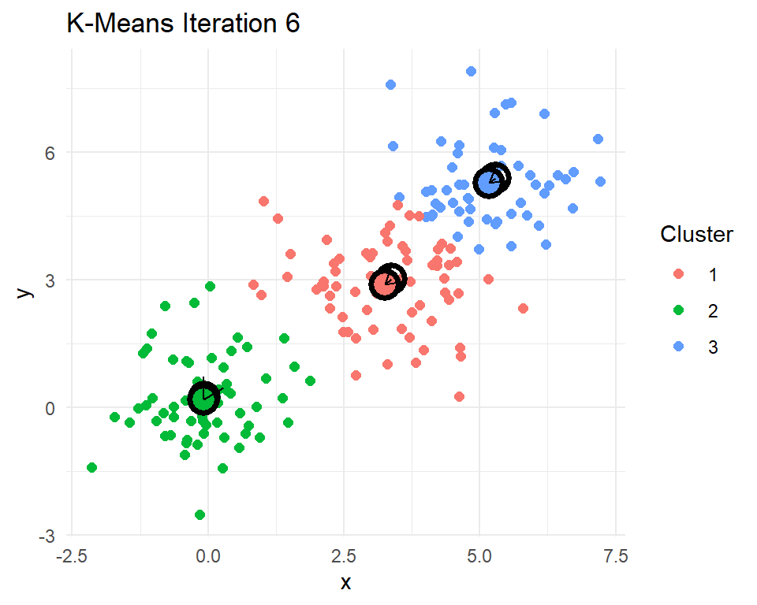

library(kableExtra)
library(ggplot2)
library(dplyr)
library(tidyr)
library(stringr)
library(caret)
library(Matrix)
library(text2vec)
library(tidytext)
library(uwot)
library(glmnet)L11 Machine learning with text
1 Introduction
We will use text2vec to explore the language used in a collection of police reports describing officer-involved shootings (OIS). These reports contain unstructured narrative text. Our goal is to transform that text into a format we can analyze using tools from natural language processing (NLP). We will walk through a typical text analysis process: tokenizing the reports, building a vocabulary, constructing a document-term matrix, and applying TF-IDF to highlight the most distinctive terms. Along the way, we will also examine co-occurrence patterns.
Before we begin, the field of natural language processing is evolving at an extraordinary pace, particularly with the rise of large language models (LLMs). These models can perform many text analysis tasks, summarization, classification, sentiment detection, with little or no training data, often outperforming traditional methods. While these notes focus on classic, interpretable techniques such as tokenization, TF-IDF, and clustering, it is important to recognize that some of these approaches may eventually be replaced or augmented by access to inexpensive, broadly available LLMs. However, understanding how text is structured, processed, and represented remains critical to interpreting any model, including LLMs.
To start, we are going to need a couple of R packages to facilitate our work. text2vec will do most of the work converting the documents into a form of data that we can analyze.
As for the source of our documents, the Philadelphia Police Department posts reports on each officer-involved shooting. I have pulled the data off their website and packaged it into an .RData file. Loading it will create the data frame ois. Details on how to pull the data off of the PPD website are part of my R4crim collection of scripts.
load("data/PPD OIS.RData")
ois <- ois |>
mutate(fatal = grepl("1 Killed|^Killed$", subInjury) |> as.numeric())
ois |> select(-text) |> head() id location
1 24-37 3450 Vista Street, Philadelphia, PA
2 24-36 3250 A Street, Philadelphia, PA
3 24-35 5450 Chancellor Street, Philadelphia, PA
4 24-32 2950 E. Street, Philadelphia, PA
5 24-31 3350 Willits Road, Philadelphia, PA
6 24-30 6150 Lebanon Avenue, Philadelphia, PA
url subInjury date lon
1 https://www.phillypolice.com/ois/24-37/ N/A 2024-12-10 -75.03885
2 https://www.phillypolice.com/ois/24-36/ N/A 2024-11-12 -75.12714
3 https://www.phillypolice.com/ois/24-35/ Killed 2024-11-10 -75.23050
4 https://www.phillypolice.com/ois/24-32/ N/A 2024-10-11 -75.12024
5 https://www.phillypolice.com/ois/24-31/ Killed 2024-10-03 -75.00908
6 https://www.phillypolice.com/ois/ps24-30/ N/A 2024-10-02 -75.24450
lat addrmatch score
1 40.04022 3450 Vista St, Philadelphia, Pennsylvania, 19136 100
2 39.99956 3250 A St, Philadelphia, Pennsylvania, 19134 100
3 39.95692 5450 Chancellor St, Philadelphia, Pennsylvania, 19139 100
4 39.99345 2950 E St, Philadelphia, Pennsylvania, 19134 100
5 40.05383 3350 Willits Rd, Philadelphia, Pennsylvania, 19136 100
6 39.98175 6150 Lebanon Ave, Philadelphia, Pennsylvania, 19151 100
addrtype fatal
1 StreetAddress 0
2 StreetAddress 0
3 StreetAddress 1
4 StreetAddress 0
5 StreetAddress 1
6 PointAddress 0The data include an incident ID, the date of the shooting, the address and coordinates where the shooting occurred, and a URL to the incident report. There is also a column called text containing the full text of the officer-involved shooting report. Some can be long, but here’s one that hits close to home as an example.
Narrative from OIS Report 16-30
PS#16-30 9/16/16 On Friday, September 16, 2016, at approximately 11:18 P.M., a uniformed sergeant in a marked police vehicle was seated in her parked vehicle in the 5100 block of Sansom Street, when a male approached and without warning, began to discharge a firearm, striking the sergeant, as she remained seated in her vehicle. The offender then began walking east on Sansom Street, stopping at a lounge/bar in the 5100 block of Sansom Street, where he discharged his firearm into the lounge/bar, striking a female employee and a male security guard. The offender continued walking east on Sansom Street to the 4900 block, where he discharged his firearm into an occupied parked vehicle, striking one female and one male occupant. Responding uniformed officers, in marked police vehicles, along with an officer from the University of Pennsylvania police force, located the offender in an alleyway in the rear of the 4800 blocks of Sansom and Walnut Streets. While in the 4800 block of Sansom Street the offender discharged his firearm, striking the University of Pennsylvania Officer as well as a marked police vehicle. Four Officers (one of whom was the University of Pennsylvania Officer) discharged their firearms, striking the offender. The offender fell to the ground and dropped his firearm. Fire Rescue responded and pronounced the offender deceased. The offender’s firearm, a 9MM, semi-automatic pistol, with an obliterated serial number, loaded with 14 live rounds, was recovered at the scene. There were three empty magazines from the offender’s firearm recovered throughout the scene. The sergeant, the University of Pennsylvania Officer, along with the four civilians who were all struck by gunfire, were transported to Penn-Presbyterian Hospital for treatment. The female from the parked vehicle was later pronounced deceased at Penn-Presbyterian Hospital. *** Information posted in the original summary reflects a preliminary understanding of what occurred at the time of the incident. This information is posted shortly after the incident and may be updated as the investigation leads to new information. The DA’s Office is provided all the information from the PPD’s investigation prior to their charging decision.
With this set of 133 reports, we will use a variety of data cleaning methods and machine learning methods to try to make sense of these documents.
2 Turning text into data with text2vec
To transform the text into a form that is better suited for analysis, we need to go through a number of steps. Part of the reason text2vec is popular is that it can handle large collections of documents. To make the tasks computational efficient there are a number of steps to work through in order to get a usable dataset.
We start by creating a “tokenizer,” a process that breaks raw text into individual units like words, phrases, or symbols (the “tokens”), the basic building blocks for text analysis. The itoken() function in the text2vec package creates an iterator over a collection of text documents, preparing them for efficient text processing. Instead of transforming all text at once, itoken() streams the documents one at a time, making it well-suited for handling large sets of documents. It “tokenizes” each document using either a built-in default or a custom tokenizer (which we will do) and produces a structure that can be passed on to other functions that will tidy up the collection of tokens and convert them into a dataset. Because it does not store all tokenized text in memory, itoken() enables fast and memory-efficient text analysis workflows.
# Create an iterator over tokens
# tokens does not actually store data
# just an efficient means for looping over documents
tokens <- itoken(ois$text,
progressbar = FALSE,
ids = ois$id)
# this gets the next batch of documents... for me around 14 documents
a <- tokens$nextElem()
a$ids [1] "24-37" "24-36" "24-35" "24-32" "24-31" "24-30" "24-29" "24-28" "24-27"
[10] "24-23" "24-22" "24-21" "24-20" "24-18"a$tokens |> sapply(head) [,1] [,2] [,3] [,4] [,5]
[1,] "3400" "3200" "5400" "29oo" "3300"
[2,] "block" "block" "block" "block" "Willits"
[3,] "of" "of" "of" "of" "Road\nOn"
[4,] "Vista" "A" "Chancellor" "E." "Thursday,"
[5,] "Street\nOn" "Street\nOn" "Street\nOn" "Street\nOn" "October"
[6,] "Tuesday," "Tuesday," "Sunday," "Friday," "3,"
[,6] [,7] [,8] [,9] [,10]
[1,] "6100" "2600" "3900" "2200" "3000"
[2,] "block" "block" "block" "block" "block"
[3,] "of" "of" "of" "of" "of"
[4,] "Lebanon" "Glenwood" "Whittaker" "S." "Ruth"
[5,] "Avenue\nOn" "Avenue\nThe" "Avenue\nThe" "65th" "Street\nThe"
[6,] "Wednesday," "Philadelphia" "Philadelphia" "Street\nThe" "Philadelphia"
[,11] [,12] [,13] [,14]
[1,] "6100" "3500" "2700" "1500"
[2,] "block" "block" "block" "block"
[3,] "of" "of" "of" "of"
[4,] "West" "F" "North" "North"
[5,] "Columbia" "Street\nA" "6th" "57th"
[6,] "Avenue\nA" "Philadelphia" "Street\nA" "Street\nA"You can see that so far itoken() has pulled in 14 documents and chopped them up into individual words. Notice that the collection of words have some undesirable quirks. For example, there are
- numbers that we probably do not really care about
- unimportant words like “of” (known as “stop words”)
- Line feeds
\nin between two words
create_vocabulary() and prune_vocabulary() help us to trim down the words to the ones that we actually care about. create_vocabulary() allows us to provide a list of stop words to remove. stopwords("en") is just such a list. Here are just a few of the 175 English stop words
stopwords::stopwords("en") |> head(20) [1] "i" "me" "my" "myself" "we"
[6] "our" "ours" "ourselves" "you" "your"
[11] "yours" "yourself" "yourselves" "he" "him"
[16] "his" "himself" "she" "her" "hers" There are lists for several other languages as well, Italian, for example.
stopwords::stopwords("it") |> head(20) [1] "ad" "al" "allo" "ai" "agli" "all" "agl" "alla" "alle"
[10] "con" "col" "coi" "da" "dal" "dallo" "dai" "dagli" "dall"
[19] "dagl" "dalla"We can also consider pairs of words in addition to single words (ngram=1:2). This allows word phrases like “police officer” and “pit bull” to be considered as words.
prune_vocabulary() trims down words from our vocabulary that are probably not particularly useful
- words that few documents use (too rare)
- words that too many documents use (too common)
We can add in some other filters too, like only using words that are at least three letters and dropping any words that have numbers in them (like 3pm or 9mm).
# reset to beginning
tokens <- itoken(ois$text,
progressbar = FALSE,
ids = ois$id)
# Build vocabulary
# these are the collection of words that I care about
# skip stopwords (the, of, in, ...)
# include two word phrases (2-gram or bigram),
# "police officer", "full uniform", "black male", "drop weapon", "pit bull"
# skip words that only show up in fewer than 10 documents
# skip words that are in the majority of documents (police?, discharged?)
vocab <- tokens |>
create_vocabulary(stopwords = stopwords::stopwords("en"),
ngram = 1:2) |>
prune_vocabulary(term_count_min = 10,
doc_proportion_max = 0.5) |>
filter(nchar(term) >= 3) |>
filter(!grepl("[0-9]", term))
# space_tokenizer(), default, keeps a lot of punctuation
vocabNumber of docs: 133
175 stopwords: i, me, my, myself, we, our ...
ngram_min = 1; ngram_max = 2
Vocabulary:
term term_count doc_count
<char> <int> <int>
1: AM, 10 10
2: Avenue\nOn 10 10
3: District_Police 10 10
4: Hospital, 10 9
5: Penn-Presbyterian 10 8
---
552: firearm 112 63
553: one 116 65
554: posted 120 60
555: vehicle 180 65
556: offender 182 49Let’s make our own tokenizer instead of using the default. As we see, the default (space_tokenizer()) often retains punctuation, symbols, or other strange features that dilute or fragment our vocabulary. Customizing the tokenizer allows us to tailor the cleaning process to the structure and quirks of the officer-involved shooting reports. The function that we will create, oisTokenizer(), is a custom tokenizer designed to clean and standardize the raw text from officer-involved shooting reports before further text analysis. It converts the text to lowercase, removes common punctuation patterns (like those in abbreviations such as “3 p.m.”), strips out unusual or inconsistent symbols (such as smart quotes, parentheses, and hash symbols), and splits the text into individual tokens using whitespace as the delimiter.
After tokenization, it will also apply “stemming”. Stemming is a text preprocessing technique that reduces words to their root or base form by removing common suffixes. For example, “running”, “runner”, and “runs” might all be reduced to “run”, allowing the model to treat these variations as the same underlying concept. The SnowballC package has a handy wordStem() function in it. Let’s test it out on a few words.
c("dog","dogs","office","officer","officers","police","policy","policies") |>
SnowballC::wordStem(language = "en")[1] "dog" "dog" "offic" "offic" "offic" "polic" "polici" "polici"Conveniently, it makes both “dog” and “dogs” simply “dog”. However, note that it also makes “office”, “officer”, and “officers” all simplified to “office”… maybe not ideal. Since our text will have a lot of “officer” and “officers” and probably very few, if any, “office”, we will need to remember that this stemming has reduced our “police officers” to “polic_offic”. You may see terms like “offic_offic” or “offend_offend”. Typically this occurs because officer or offender was the last word in one sentence and the first non-stop word in the next sentence (e.g. “The suspect ran from the officer. The officer said ‘stop!’”).
# our own custom tokenizer
oisTokenizer <- function(text)
{
text |>
tolower() |>
# remove abbreviation punctuation (like 3 p.m.)
gsub("([A-z])[,.]+", "\\1", x=_) |>
# remove some weird symbols
gsub("[“”()#]", "", x=_) |>
# no smart quotes
gsub("’", "'", x=_) |>
# split any words with \n, \t, \r between them
strsplit("\\s+") |>
# stemming
lapply(SnowballC::wordStem, language = "en")
}Now we can rerun our documents through our new tokenizer.
# reset to beginning
# now using our oisTokenizer()
tokens <- itoken(ois$text,
tokenizer = oisTokenizer,
progressbar = TRUE,
ids = ois$id)
vocab <- tokens |>
create_vocabulary(stopwords = stopwords::stopwords("en"),
ngram = 1:2) |>
prune_vocabulary(term_count_min = 10,
doc_proportion_min = 0.05,
doc_proportion_max = 0.5) |>
filter(nchar(term) >=3) |>
filter(!grepl("[0-9]", term)) |>
# Drop some specific terms that are not useful (e.g. philadelphia)
filter(!term %in% c("philadelphia_polic","philadelphia",
"inform_da","da_offic","incid_inform","inform_ppd",
"inform_post","post","officer-involv",
"officer-involv_shoot"))
vocabNumber of docs: 133
175 stopwords: i, me, my, myself, we, our ...
ngram_min = 1; ngram_max = 2
Vocabulary:
term term_count doc_count
<char> <int> <int>
1: advanc_toward 10 7
2: announc 10 8
3: approach_driver 10 9
4: cartridg 10 9
5: district_place 10 10
---
514: shoot 102 62
515: door 103 51
516: point 105 54
517: suspect 110 21
518: offend 308 56Now we have a collection of words and word phrases gathered from our documents. Note that it includes some two-word phrases (bigrams) with the two stemmed words combined with an underscore between them.
2.1 Creating a document-term matrix (DTM)
Our next destination is to create a “document-term matrix” (DTM). A DTM is a matrix representation of a collection of text documents, where each row corresponds to a document and each column corresponds to a unique term (a word or phrase) from the collection of documents. The values in the matrix typically reflect the number of times each term appears in each document. A DTM transforms the unstructured text into a format that machine learning models can work with.
The first step to getting to a DTM with text2vec is to create a “vectorizer”. A vectorizer translates tokenized text into a numeric matrix format, such as a DTM. vocab_vectorizer() creates a function that will take batches of documents, compare them to the vocabulary we built, and produce the associated components of the DTM.
# Create a vectorizer
# helper function to convert streams of text into DTM
vectorizer <- vocab_vectorizer(vocab)
# Let's see what this function looks like!
vectorizerfunction (iterator, grow_dtm, skip_grams_window_context, window_size,
weights, binary_cooccurence = FALSE)
{
vocab_corpus_ptr = cpp_vocabulary_corpus_create(vocabulary$term,
attr(vocabulary, "ngram")[[1]], attr(vocabulary, "ngram")[[2]],
attr(vocabulary, "stopwords"), attr(vocabulary, "sep_ngram"))
setattr(vocab_corpus_ptr, "ids", character(0))
setattr(vocab_corpus_ptr, "class", "VocabCorpus")
corpus_insert(vocab_corpus_ptr, iterator, grow_dtm, skip_grams_window_context,
window_size, weights, binary_cooccurence)
}
<bytecode: 0x00000231185955e8>
<environment: 0x0000023118594238>It is a little difficult to interpret, but we can see that it is going to take in an iterator over our tokenized documents and produce something that will (hopefully!) be useful. Let’s give it a try.
# Create the document-term matrix (DTM)
# row represents a document
# column represents a unique term (word or phrase)
# cell contains the count (or weight) of that term in the document
oisDTM <- create_dtm(tokens, vectorizer)
oisDTM[65:74, 415:424] |> as.matrix() |> t() 20-34 20-33 20-32 20-31 20-30 20-29 20-26 20-24 20-23 20-20
affair 0 0 0 0 0 0 0 0 0 0
intern 0 0 0 0 0 0 0 0 0 0
intern_affair 0 0 0 0 0 0 0 0 0 0
offic_offic 0 3 0 0 0 0 0 0 0 1
sever 0 1 0 0 0 0 3 1 0 5
wound 0 0 1 1 0 1 2 0 0 0
complain 0 0 4 0 0 0 23 0 0 0
dure 0 0 1 0 0 1 0 0 0 0
duti 0 0 0 0 0 0 0 0 0 0
park 0 0 0 1 1 2 3 0 0 0We have a DTM! I have picked a few interesting rows and columns. I also transposed the DTM so it is more readable, but typically the rows are documents and columns are terms. You can see a few non-zero counts in this matrix. These indicate which documents include these terms and how many times that term appears in the document.
Let’s explore further.
# number of documents and words
dim(oisDTM)[1] 133 518# rows represent individual OIS shooting reports
rownames(oisDTM)[1:5][1] "24-37" "24-36" "24-35" "24-32" "24-31"# columns are the words/phrases
colnames(oisDTM)[1:10] # feature names [1] "advanc_toward" "announc" "approach_driver" "cartridg"
[5] "district_place" "district_polic" "drop_gun" "due"
[9] "fled_scene" "gave" # how many vocab words in document?
rowSums(oisDTM)24-37 24-36 24-35 24-32 24-31 24-30 24-29 24-28 24-27 24-23 24-22 24-21 24-20
56 71 118 56 63 63 62 59 43 84 83 84 96
24-18 24-17 24-15 24-14 24-13 24-12 24-10 24-09 24-08 24-07 24-06 24-05 24-04
110 78 101 81 98 150 95 141 116 96 98 184 242
24-03 24-02 24-01 23-33 23-31 23-29 23-27 23-26 23-25 23-24 23-23 23-21 23-14
101 93 105 74 138 79 142 112 97 92 108 108 101
23-13 23-10 23-04 22-27 22-26 22-24 22-22 22-15 22-14 22-10 22-09 22-08 22-07
77 99 159 116 165 114 94 169 130 251 100 105 113
22-06 22-05 22-04 22-03 22-01 21-15 21-14 21-12 21-10 21-09 21-06 21-04 20-34
179 140 89 98 94 93 92 165 163 70 109 174 65
20-33 20-32 20-31 20-30 20-29 20-26 20-24 20-23 20-20 20-15 20-12 20-08 20-07
159 143 105 124 115 292 135 104 204 116 126 139 103
19-23 19-21 19-20 19-14 19-13 19-11 19-09 19-06 19-04 18-28 18-27 18-26 18-25
133 106 166 92 152 118 166 140 131 137 136 136 120
18-22 18-19 18-17 18-16 18-12 18-08 18-02 18-01 17-37 17-36 17-30 17-28 17-25
96 110 133 134 87 92 102 147 145 101 78 78 104
17-23 17-22 17-20 17-19 17-17 17-13 17-03 16-43 16-40 16-38 16-37 16-35 16-34
135 104 93 106 121 114 135 140 150 111 161 137 87
16-33 16-32 16-30 16-29 16-28 16-19 16-18 16-16 16-13 16-12 16-11 16-10 16-07
174 141 143 127 98 92 114 105 109 130 135 129 119
16-03 16-02 16-01
173 131 113 # how many documents have these words?
colSums(oisDTM)[1:20] advanc_toward announc approach_driver cartridg district_place
10 10 10 10 10
district_polic drop_gun due fled_scene gave
10 10 10 10 10
ground_drop hand_offic hospit_critic hospit_polic june
10 10 10 10 10
knock lost notifi offic_drew offic_oper
10 10 10 10 10 # Most common words?
colSums(oisDTM) |>
sort(decreasing = TRUE) |>
head(10) offend suspect point door shoot two avenu dog toward patrol
308 110 105 103 102 101 99 93 93 90 2.2 Term Frequency–Inverse Document Frequency
While raw term counts in a document-term matrix tell us how often each word appears, they do not account for how informative or distinctive those words are across the entire collection of documents. Common words like “officer” or “incident” may appear frequently in every report, but they are not useful for distinguishing one document from another. Term frequency-inverse document frequency (TF-IDF) improves on this by weighting terms based on how frequently they appear in a specific document and how rare they are across all documents. This highlights terms that are both common within a document and uncommon elsewhere, making them more meaningful for identifying the unique content of each report.
Term Frequency-Inverse Document Frequency (TF-IDF) gives weights to words in a document in a way that balances:
- Term Frequency (TF): This word must be important in this document
- The more a word appears in a document, the more likely it is to be relevant to the document’s content
- If the word “shooting” appears 12 times in a police report, it is probably central to that document
- Inverse Document Frequency (IDF): But if it appears in every document, it is not very informative
- Common words like “officer”, “incident”, or “said” might appear everywhere
- IDF downweights those high-frequency but low-discrimination terms
- It prefers terms that help distinguish one document from others
The formula for TF-IDF for document \(i\) and term \(j\):
\[ \mathrm{tfidf}_{ij} = \mathrm{TF}_{ij}\log\frac{N}{\mathrm{DF}_j} \] where
- \(\mathrm{TF}\) is the number of times term \(j\) appears in document \(i\). It measures the importance of the term within a document
- \(N\) = total number of documents
- \(\mathrm{DF}_j\) = number of documents containing term \(j\)
\(\mathrm{IDF}_{ij}=\log\frac{N}{\mathrm{DF}_j}\) captures the rarity across documents. Note that if a word appears in all documents then \(\mathrm{tfidf}_{ij} = 0\). The combination of \(\mathrm{TF}\) and \(\mathrm{IDF}\) gives a measure of relevance and distinctiveness. A high \(\mathrm{tfidf}_{ij}\) means a term appears often in document \(i\), but rarely in other documents. It gives you terms that define a document. These are the terms that are useful for classification, clustering, or topic modeling.
2.2.1 Example
Assume there are \(N=100\) documents.
| Term | TF in Doc A | DF across corpus | IDF | TF-IDF |
|---|---|---|---|---|
| “weapon” | 5 | 10 | 2.3 | 11.5 |
| “officer” | 6 | 95 | 0.1 | 0.3 |
| “said” | 20 | 100 | 0 | 0 |
- “weapon” gets a high score, specific and relevant
- “officer” is common, downweighted
- “said” is everywhere, zeroed out
So “weapon” is most distinctive while “said” contributes no distinguishing information.
Let’s create the TFIDF for our OIS reports.
# TF-IDF: term frequency–inverse document frequency weights
# downweights common words that appear in many documents
# upweights rare words that are more informative or distinctive
# TF: How often a word appears in a document
# IDF: How rare that word is across all documents
# TF-IDF = TF × log(N / DF)
# N = total number of documents
# DF = number of documents containing the term
tfidf_transformer <- TfIdf$new()
oisTFIDF <- tfidf_transformer$fit_transform(oisDTM)Let’s take a look at those same rows and columns that we did before for the DTM. The matrix looks largely the same, just everything scaled down.
oisTFIDF[65:74, 415:424] |> as.matrix() |> round(2) |> t() 20-34 20-33 20-32 20-31 20-30 20-29 20-26 20-24 20-23 20-20
affair 0 0.00 0.00 0.00 0.00 0.00 0.00 0.00 0 0.00
intern 0 0.00 0.00 0.00 0.00 0.00 0.00 0.00 0 0.00
intern_affair 0 0.00 0.00 0.00 0.00 0.00 0.00 0.00 0 0.00
offic_offic 0 0.03 0.00 0.00 0.00 0.00 0.00 0.00 0 0.01
sever 0 0.01 0.00 0.00 0.00 0.00 0.02 0.01 0 0.04
wound 0 0.00 0.01 0.01 0.00 0.01 0.01 0.00 0 0.00
complain 0 0.00 0.07 0.00 0.00 0.00 0.20 0.00 0 0.00
dure 0 0.00 0.01 0.00 0.00 0.01 0.00 0.00 0 0.00
duti 0 0.00 0.00 0.00 0.00 0.00 0.00 0.00 0 0.00
park 0 0.00 0.00 0.02 0.01 0.03 0.02 0.00 0 0.00Let’s compare the top features.
# View top features by TF
colSums(oisDTM) %>%
sort(decreasing = TRUE) %>%
head(10) offend suspect point door shoot two avenu dog toward patrol
308 110 105 103 102 101 99 93 93 90 # View top features by TF-IDF
colSums(oisTFIDF) %>%
sort(decreasing = TRUE) %>%
head(10) offend dog suspect shoot knife avenu
3.124350 2.212498 1.819930 1.134967 1.098324 1.087595
driver victim resid polic_vehicl
1.000676 1.000078 0.993729 0.993306 The TF-IDF does change which terms make the top-10 list. We see “knife” and “driver” show up and “door” and “point” drop off.
3 Term co-occurrence matrix (TCM)
There may be some concepts that are not limited to a single word or a few adjacent words. Term co-occurrence looks for words that tend to appear close to each other in text to possibly help you expand the vocabulary to additional phrases. A term co-occurrence matrix (TCM) captures how often pairs of words appear near each other within a given window of text, such as a sentence or a few neighboring words. Unlike a document-term matrix, which represents the relationship between documents and individual terms, a TCM focuses on the relationships between terms themselves. This is useful for uncovering word associations and identifying common phrases. In our case, we will use the TCM to explore how certain words, such as “officer,” “suspect,” or “weapon,” tend to co-occur across police shooting reports, revealing patterns that might not be visible from frequency counts alone.
When scanning through each document, setting skip_grams_window = 5 will treat any two terms that appear within a window of 5 tokens as co-occurring. For example, if the document has the phrase “the officer shot the suspect with a weapon” and we set skip_grams_window = 5, then for the word “shot” it will consider “the”, “officer”, “the”, “suspect”, “with” as co-occurring terms.
We will use create_tcm() to create a TCM. The \((i,j)\) element of the TCM will be the number of times term \(i\) occurs within 5 terms of term \(j\).
# Create a co-occurrence matrix (Feature Co-occurrence Matrix)
oisTCM <- itoken(ois$text,
tokenizer = oisTokenizer,
progressbar = FALSE,
ids = ois$id) |>
create_tcm(vocab_vectorizer(vocab),
skip_grams_window = 5)This will be a little easier to visualize if we convert to a long (rather than wide) format.
# Convert to triplet format and extract top co-occurring pairs
oisPairs <- Matrix::summary(oisTCM) |>
filter(i != j) |>
rename(feature1 = i, feature2 = j, weight = x) |>
left_join(data.frame(feature1 = 1:nrow(oisTCM),
term1 = colnames(oisTCM)),
by = join_by(feature1)) |>
left_join(data.frame(feature2 = 1:nrow(oisTCM),
term2 = colnames(oisTCM)),
by = join_by(feature2)) |>
select(-feature1, -feature2) |>
filter(term1 != term2) |>
filter(!str_detect(term1, fixed(term2)) &
!str_detect(term2, fixed(term1)))
oisPairs |>
arrange(desc(weight)) |>
slice_head(n = 50)
weight term1 term2
1 30.00000 offic_provid provid_inform
2 30.00000 lead_new new_inform
3 30.00000 investig_lead lead_new
4 30.00000 may_updat updat_investig
5 30.00000 incid_may may_updat
6 30.00000 incid_may short_incid
7 30.00000 occur_time time_incid
8 30.00000 occur_time understand_occur
9 30.00000 preliminari_understand understand_occur
10 30.00000 preliminari_understand reflect_preliminari
11 30.00000 reflect preliminari
12 30.00000 reflect_preliminari summari_reflect
13 30.00000 reflect summari
14 30.00000 origin_summari summari_reflect
15 30.00000 summari origin
16 30.00000 origin_summari post_origin
17 30.00000 understand preliminari
18 30.00000 investig_lead updat_investig
19 30.00000 lead new
20 30.00000 post_short short_incid
21 30.00000 investig_prior ppd_investig
22 29.50000 prior_charg charg_decis
23 29.50000 prior_charg investig_prior
24 25.00000 affair intern
25 24.00000 administr duti
26 24.00000 outcom pend
27 24.00000 administr place
28 23.50000 duti_pend administr_duti
29 23.50000 duti pend
30 23.00000 administr_duti place_administr
31 23.00000 duti_pend pend_outcom
32 20.00000 ppd_investig prior
33 20.00000 lead new_inform
34 20.00000 investig_lead new
35 20.00000 investig_lead updat
36 20.00000 incid_may updat
37 20.00000 occur_time understand
38 20.00000 reflect_preliminari understand
39 20.00000 preliminari_understand reflect
40 20.00000 summari_reflect preliminari
41 20.00000 reflect_preliminari summari
42 20.00000 summari_reflect origin
43 20.00000 post_origin summari
44 20.00000 origin_summari reflect
45 20.00000 lead updat_investig
46 20.00000 understand_occur preliminari
47 19.86667 charg_decis prior
48 19.66667 prior_charg decis
49 19.25000 mark patrol
50 18.50000 stabl conditMuch of this co-occurrence is due to the template language describing where the department is in the investigation, referrals to the district attorney, and the report offers preliminary summary.
Template language on the report
*** Information posted in the original summary reflects a preliminary understanding of what occurred at the time of the incident. This information is posted shortly after the incident and may be updated as the investigation leads to new information. The District Attorney’s Office is provided all the information from the PPD’s investigation prior to their charging decision.
Further on down the list some term pairs a more interesting.
oisPairs |>
filter(weight >= 8 & weight <=9) |>
arrange(desc(weight))
weight term1 term2
1 9.000000 firearm_strike discharg_firearm
2 9.000000 univers_hospit templ
3 9.000000 driver door
4 9.000000 open door
5 8.999996 duti_pend place
6 8.750000 attack dog
7 8.666667 respond_radio call
8 8.666667 affair_officer-involv shoot
9 8.666667 affair_officer-involv intern
10 8.500000 inform_district new_inform
11 8.500000 intern pend
12 8.500000 attorney_offic offic_provid
13 8.500000 inform_district district_attorney
14 8.500000 offic_mark mark_polic
15 8.500000 return fire
16 8.500000 semi-automat pistol
17 8.500000 drop offend
18 8.250000 pend_outcom intern_affair
19 8.250000 outcom_intern duti_pend
20 8.250000 outcom affair
21 8.250000 miss offend
22 8.250000 knife drop
23 8.000001 unmark polic_vehicl
24 8.000000 arriv locat4 Singular value decomposition for text
We already explored how SVD can be used to compress images and classify emojis. Now we will explore what SVD does for text.
Since TFIDF matrices can get large, we will use the SVD implementation in the IRLBA package (Implicitly Restarted Lanczos Bidiagonalization Algorithm). The IRLBA implementation of SVD allows you to limit the number of singular vectors to compute, ignoring and never computing the rest.
library(irlba)
oisSVD <- irlba(t(oisTFIDF), nv = 50)
# each run of SVD can switch the signs on U and V
# this forces sign(v[1,]) = +1, so SVD is unique
oisSVD$u <- sweep(oisSVD$u, 2, sign(oisSVD$v[1,]), `*`)
oisSVD$v <- sweep(oisSVD$v, 2, sign(oisSVD$v[1,]), `*`)Let’s see how many singular vectors seem important. In Figure 1 we see the first two or three singular values seem large, but then they decrease quite slowly from there.
plot(oisSVD$d,
xlab="Index of the singular value",
ylab="Singular value",
ylim=c(0, max(oisSVD$d)),
pch=16)
oisTFIDF
The columns of \(\mathbf{U}\) are our “eigendocuments,” the fundamental building blocks that the actual documents blend to form their word collections. We will take a look at the first five eigendocuments, highlighting the 10 terms with the highest weight in the left singular vectors. Note that both large positive and large negative values are important to interpret. I have added headings to each left singular vector summarizing what kinds of incidents might heavily weight this column of \(\mathbf{U}\).
# Stack the top 10 terms from each component into one long table
termsTop10 <- lapply(1:5, function(uCol)
{
data.frame(component = paste0("u",uCol),
term=colnames(oisTFIDF),
u=oisSVD$u[,uCol]) |>
arrange(desc(abs(u))) |>
slice_head(n=10)
}) |>
bind_rows()termsTop10 |>
group_by(component) |>
mutate(rank = row_number()) |>
ungroup() |>
pivot_wider(names_from = component,
values_from = c(term, u),
names_sep = "_") |>
data.frame() |>
select(term_u1, u_u1, term_u2, u_u2, term_u3, u_u3,
term_u4, u_u4, term_u5, u_u5) |>
kbl(align = "rrrrrrrrrr",
col.names = header_labels,
digits = 2,
escape = FALSE,
booktabs = TRUE) |>
add_header_above(c("Offender and dog" = 2,
"Dog attack, no offender" = 2,
"Suspect/SWAT" = 2,
"Knife attacks" = 2,
"?" = 2),
escape = FALSE) |>
kable_styling(full_width = FALSE,
latex_options = "scale_down")| Term | \(u_1\) | Term | \(u_2\) | Term | \(u_3\) | Term | \(u_4\) | Term | \(u_5\) |
|---|---|---|---|---|---|---|---|---|---|
| dog | 0.26 | dog | 0.50 | suspect | -0.61 | knife | 0.44 | knife | -0.53 |
| offend | 0.25 | offend | -0.31 | dog | 0.33 | offic_number | -0.32 | suspect | -0.31 |
| suspect | 0.17 | attack | 0.21 | offend | 0.20 | number | -0.30 | offic_number | -0.24 |
| shoot | 0.11 | bull | 0.16 | swat | -0.18 | suspect | -0.28 | number | -0.20 |
| attack | 0.10 | pit_bull | 0.16 | offic_number | 0.16 | number_one | -0.26 | drop_knife | -0.19 |
| resid | 0.10 | pit | 0.15 | attack | 0.16 | drop_knife | 0.19 | number_one | -0.19 |
| victim | 0.09 | offic_number | -0.12 | number | 0.14 | victim | 0.15 | offend | 0.14 |
| avenu | 0.09 | number | -0.11 | swat_offic | -0.14 | drop | 0.12 | rear | 0.13 |
| knife | 0.09 | number_one | -0.10 | number_one | 0.13 | bedroom | 0.11 | unmark | 0.12 |
| depart | 0.09 | veteran | 0.09 | male_suspect | -0.13 | offend | 0.10 | area | 0.11 |
Note that “dog” shows up with a large absolute value in the first three left singular vectors. Even if there is a large negative value, that still means the term is important. A report of shooting a pit bull will have a large negative value for its \(v_2\), signalling a heavy presence of dog, pit bull, and attack terms, but the absence of the “offender” term. The first left singular vector measures the combined presence of “dog,” “offender,” and “suspect” (or the absence of all three if a document’s value of \(v_1\) is large and negative.
Remember that the columns of \(\mathbf{V}\) tell us how a particular report mixes together the eigendocuments (columns of \(\mathbf{U}\)) to form their TFIDF weighted terms. I am curious to explore documents involving dog attacks (\(\mathbf{u}_2\)) and documents with knife attacks (\(\mathbf{u}_4\)). The code below creates an interactive 2D map of documents on their values of \(v_2\) and \(v_4\). For each document, the code extracts the 10 most heavily weighted TF-IDF terms to use as hover text, giving a quick sense of the content. It also assigns each document to a category, “Likely dog attack,” “Likely knife attack,” or “Other,” based on thresholds of \(v_2\) and \(v_4\). plotly() produces an interactive scatterplot where each point is a document, colored by category and annotated with its key terms. This visualization allows us to explore thematic variation in the reports and visually distinguish different types of incidents based on the language used.
library(plotly)
# collect the 10 terms with the highest weight in each document
i <- apply(oisTFIDF, 1, order, decreasing=TRUE)
hovertext <- apply(i, 2,
function(j)
{
colnames(oisTFIDF)[j[1:10]] |>
paste(collapse = "\n")
})
# label some document types
group <- case_when(oisSVD$v[,2] > 0.1 ~ "Likely dog attack",
oisSVD$v[,4] > 0.1 ~ "Likely knife attack",
TRUE ~ "Other")
groupCols <- c("Likely dog attack" = "red",
"Likely knife attack" = "orange",
"Other" = "steelblue")
# make a plot with hovertext
plot_ly(x = oisSVD$v[,2],
y = oisSVD$v[,4],
type = "scatter",
mode = "markers",
text = hovertext,
hoverinfo = "text",
color = group,
colors = groupCols,
marker = list(size = 6)) |>
layout(xaxis = list(title = "V2 - Dog attack measure"),
yaxis = list(title = "V4 - Knife attack measure"))5 Clustering documents
5.1 Hartigan’s k-means clustering algorithm
Hartigan’s k-means algorithm (Hartigan 1975; Hartigan and Wong 1979) is an iterative method for partitioning data into \(k\) clusters by minimizing the total within-cluster sum of squares. It begins with randomly chosen cluster centers (centroids) and alternates between two steps:
- assigning each data point to the nearest centroid based on Euclidean distance
- updating each centroid to be the mean of the points currently assigned to it
These steps repeat until the assignments no longer change significantly, indicating convergence. The algorithm is greedy and locally optimal. That is, it always reduces the the within cluster sum of squares at each iteration, but it can converge to different solutions depending on the initial centroids. Multiple runs with different random starts are often used to find a better overall solution.
Let’s look at a little 2D demonstration before we run this on documents, which can be a little abstract. I have created three clusters with centers at (0,0), (3,3), and (5,5). Then I have R code that reassigns points to their nearest centroids, recomputes the cluster centroids, plots the points colored by their cluster assignment, checks for convergence, and repeats if needed.
set.seed(20250325)
# Simulate data from 3 clusters
df <- data.frame(x=rnorm(180, mean=c(0,3,5)),
y=rnorm(180, mean=c(0,3,5)))
# find three clusters
k <- 3
# pick three random points to start
old_centroid <- df |>
slice_sample(n=k) |>
select(x,y)
# Function to assign points to nearest center
# compare each point to each of the three centers
# assign the point to its closest center
assign_clusters <- function(df, centers)
{
apply(df, 1, function(point)
{
which.min(colSums((t(centers) - point)^2))
})
}
iter <- 1
repeat
{
# Assign points to nearest cluster
df$cluster <- assign_clusters(df[,c("x","y")],
old_centroid)
# get centroids of newly assigned clusters
new_centroid <- df |>
group_by(cluster) |>
summarize(x=mean(x), y=mean(y))
# plot showing old and new centroids
plotKmeans <- ggplot(df, aes(x = x, y = y, color = factor(cluster))) +
geom_point(size = 2) +
geom_point(data = old_centroid, aes(x = x, y = y),
shape = 21, size = 5, stroke = 2, color = "black") +
geom_point(data = new_centroid, aes(x = x, y = y, fill=factor(cluster)),
shape = 21, size = 5, stroke = 2, color = "black") +
geom_segment(
data = bind_cols(old_centroid, new_centroid),
aes(x = x...1, y = y...2, xend = x...4, yend = y...5),
arrow = arrow(length = unit(0.15, "inches")),
color = "black"
) +
ggtitle(paste("K-Means Iteration", iter)) +
labs(color="Cluster") +
guides(fill = "none") +
theme_minimal()
print(plotKmeans)
new_centroid <- new_centroid |> select(-cluster)
# check if converged
if(all(abs(new_centroid - old_centroid) < 0.001))
{
break
}
old_centroid <- new_centroid
iter <- iter + 1
}





After 8 iterations, the centroids of the clusters do not change. That means the cluster assignments for each point will no longer change. The k-means algorithm has converged after 8 iterations. Indeed k-means seems to have figured out the three clusters that I simulated. In practice we never really know how many real clusters there are. We need to come up with some measures that help us decide whether the number of clusters and their centroids adequately capture the data points.
The plot in Figure 11 illustrates the total sum of squares (TSS), which measures the overall variability in the dataset. It shows each data point connected to the grand centroid, the average of all points in the data. The total sum of squares is calculated by summing the squared distances from each point to this overall centroid. This serves as a baseline measure of dispersion before we run our clustering algorithm.
tot_centroid <- df |>
select(x, y) |>
colMeans() |>
t() |>
data.frame()
plotTotCentroid <- ggplot(df, aes(x = x, y = y,
color = factor(cluster))) +
geom_point(size = 2) +
geom_segment(
data = bind_cols(tot_centroid |>
slice(rep(1,180)),
df |>
select(x,y)),
aes(x = x...1, y = y...2, xend = x...3, yend = y...4),
color = "black"
) +
labs(color="Cluster") +
theme_minimal()
print(plotTotCentroid)
In contrast, Figure 12 depicts the within-cluster sum of squares (WCSS). Each point is now connected to its respective cluster centroid, rather than the overall centroid. The sum of squared distances from each point to its assigned cluster center quantifies how compact each cluster is.
new_centroid$cluster <- 1:3
plotWithinCentroid <- ggplot(df, aes(x = x, y = y,
color = factor(cluster))) +
geom_point(size = 2) +
geom_segment(
data = df |>
left_join(new_centroid, by=join_by(cluster)),
aes(x = x.x, y = y.x, xend = x.y, yend = y.y),
color = "black"
) +
labs(color="Cluster") +
theme_minimal()
print(plotWithinCentroid)
A useful measure of clustering quality is the proportion of variance explained by the clustering, computed as \(R^2 = 1-\frac{WCSS}{TSS}\). This tells us how much of the total variability has been accounted for by the clustering structure. A higher value indicates better clustering. If this proportion is low, it may suggest that the three clusters is insufficient to capture the underlying structure of the data.
Let’s put all this to work on our officer-involved shooting reports. We will define documents by their first 10 right singular vectors (columns of \(\mathbf{V}\)). We will actually cluster on \(\mathbf{V}\boldsymbol\Sigma\). Remember that SVD normalizes all the columns in \(\mathbf{V}\) (and those in \(\mathbf{U}\) as well) to have length 1. That has the effect of making differences between documents based on their values of \(v_{30}\) just as large as differences on \(v_1\). The singular values in \(\boldsymbol\Sigma\) tell us how to weight each column based how much variance it captures in the original TF-IDF matrix. Without this weighting, each dimension would contribute equally to distance calculations during clustering, even though some components may be far more informative than others. By using \(\mathbf{V}\boldsymbol\Sigma\), our clustering algorithm will more accurately group documents based on their underlying thematic content.
R has a built-in kmeans() function in the default stats package that will do all the work for us. First, we need to decide on how many clusters we should use. The code below explores the relationship between the number of clusters, \(k\), and \(R^2\). This is a key part of the “elbow method,” a common strategy for selecting an appropriate number of clusters. By running k-means repeatedly with increasing values of \(k\) (from 1 to 40 in this case), and recording the corresponding \(R^2\), we can visualize how much the clustering improves as \(k\) increases. A plot of \(R^2\) versus \(k\) typically shows a steep increase initially and then levels off. The “elbow” point, where the rate of improvement sharply slows, is often a good choice for the number of clusters. It represents a balance between underfitting and overfitting the structure in the data. Another common method is to consider more and more clusters until \(R^2\) reaches 0.80 (or 0.90).
design <- data.frame(k=1:40, R2=NA)
for(i in 2:nrow(design))
{
# multiply by the singular values to incorporate the importance of each
km <- kmeans(oisSVD$v[,1:10] %*% diag(oisSVD$d[1:10]),
centers = design$k[i],
nstart = 5)
design$R2[i] <- ifelse(i==1, 1,
1 - km$tot.withinss/km$totss)
}
plot(R2~k, data=design, pch=16,
xlab=expression(k),
ylab=expression(R^2),
ylim=0:1)
abline(h=0.8, col="red")
kSelect <- design |>
filter(R2 > 0.8) |>
slice_min(R2) |>
pull(k)
In Figure 13 I have marked where the \(R^2\) reaches 80%. That happens when we set \(k\) to 13. With \(k\) set to 13, the clustering captures 80% of the variation in the first seven right singular vectors.
# run kmeans on first 10 right singular vectors (scaled by Sigma)
# clusters similar documents
set.seed(20250325)
oisKmeans <- kmeans(oisSVD$v[,1:10] %*% diag(oisSVD$d[1:10]),
centers = kSelect,
nstart = 5) # try 5 random starting pointsLet’s add the cluster label to our original OIS data frame so we can see if themes are identifiable from their incident descriptions.
# add the cluster labels to the dataset
ois$cluster <- oisKmeans$cluster
ois |>
select(id,location,date,cluster) |>
head() id location date cluster
1 24-37 3450 Vista Street, Philadelphia, PA 2024-12-10 5
2 24-36 3250 A Street, Philadelphia, PA 2024-11-12 11
3 24-35 5450 Chancellor Street, Philadelphia, PA 2024-11-10 2
4 24-32 2950 E. Street, Philadelphia, PA 2024-10-11 5
5 24-31 3350 Willits Road, Philadelphia, PA 2024-10-03 2
6 24-30 6150 Lebanon Avenue, Philadelphia, PA 2024-10-02 5We need to craft some labels or definitions for these clusters. For each cluster I will compute the average of their TFIDF weights for each term in the vocabulary. I will paste together the top ten terms as cluster labels.
hovertext <- as.matrix(oisTFIDF) |>
as.data.frame() |>
mutate(cluster = ois$cluster) |>
group_by(cluster) |>
# average the TFIDF values within each cluster
summarize(across(everything(), mean), .groups = "drop") |>
select(-cluster) |>
# find the top 10 TFIDF weighted terms by cluster
apply(1, function(w)
{
i <- order(w, decreasing = TRUE)
colnames(oisTFIDF)[i[1:10]]
}) |>
t() |>
# paste together the top 10 terms
apply(1, paste, collapse=", ") |>
data.frame(terms = _) |>
cbind(size = oisKmeans$size,
cluster = 1:kSelect) |>
arrange(desc(size))Let’s examine the top 10 terms for these clusters.
hovertext |>
kable(escape = FALSE,
col.names = c("Top Terms", "Size", "Cluster")) |>
kable_styling(full_width = FALSE,
position = "left",
bootstrap_options = c("striped", "hover"))| Top Terms | Size | Cluster |
|---|---|---|
| south, prior, saw, charg_decis, decis, incid_may, investig_lead, investig_prior, lead, lead_new | 25 | 3 |
| offend, polic_vehicl, offend_offend, mark_polic, properti, offic_mark, injuri_result, pm_uniform, result, miss_offend | 21 | 13 |
| passeng, driver, rear, point, unmark, black, area, door, gun, side | 16 | 7 |
| shoot, victim, room, place, depart, unknown, duti, polic_district, unit, veteran | 12 | 2 |
| dog, attack, bull, pit_bull, pit, owner, year, year_old, anim, old | 11 | 11 |
| suspect, male_suspect, robberi, depart, off-duti, depart_assign, dure, graze, veteran, vehicl_offic | 10 | 8 |
| offend, victim, gun, handgun, black, right, sever, area, observ_offend, involv | 8 | 1 |
| swat, properti, swat_offic, unit, announc, door, detect, floor, insid, knock | 8 | 12 |
| dog, resid, narcot, retreat, polic_depart, secur, encount, veteran_philadelphia, veteran, depart | 7 | 5 |
| knife, drop_knife, offend, bedroom, drop, toward_offic, arm, move, toward, male_drop | 7 | 9 |
| offic_number, number, number_one, two, offend, plaincloth_offic, plaincloth, pistol, three, firearm_offic | 4 | 6 |
| detect, offend, unmark, plaincloth, observ_offend, car, treat_releas, chase, drew_firearm, discharg_firearm | 3 | 10 |
| suspect, swat_offic, swat, femal, properti, male_suspect, complain, road, point, white | 1 | 4 |
From the list of terms we can get a sense of what kinds of incidents fall into these clusters. You can see incidents surrounding a vehicle (driver, passenger, door), incidents involving SWAT Special Weapons and Tactics), incidents involving someone with a knife, and shootings of dogs, commonly pit bulls.
Let’s plot these out based on the values of each document’s first two right singular vectors (\(v_1\) and \(v_2\)). I will color them based on their clustering and add the top 10 terms as hovertext so we have some idea about the themes. Explore the clusters in the plot and see if you can extract some of those themes.
plot_ly(
x = oisSVD$v[,1],
y = oisSVD$v[,2],
type = "scatter",
mode = "markers",
color = ois$cluster,
hoverinfo = "text", # don't show the coordinates, only hoverinfo
text = hovertext$terms[ois$cluster] |>
gsub(", ", "\n", x=_),
marker = list(size = 6)
) |>
layout(
xaxis = list(title = "SVD Dimension 1"),
yaxis = list(title = "SVD Dimension 2"),
title = "K-Means Clustering of OIS Reports"
)5.2 Exploring Document Clusters with UMAP
UMAP (Uniform Manifold Approximation and Projection) is another approach to visualizing document clusters (McInnes et al. 2018). Unlike SVD, which finds linear axes of variation, UMAP attempts to preserve both local neighborhood structure and global relationships, making it especially useful for discovering clusters or themes in high-dimensional data like TF-IDF matrices. UMAP aims to find a low dimensional (like 2D) arrangement of points where distances between points in that low dimensional space is close to the distances in the higher dimensional space.
We will apply UMAP to the TF-IDF representation of the reports.
set.seed(20250330)
oisUMAP <- umap(as.matrix(oisTFIDF),
n_neighbors = 15, # default 15
min_dist = 0.1) # default 0.01Setting min_dist = 0.01 (default) tends to produce very tight clusters, often leading to visual “clumping,” points getting packed very close together, even if they are semantically a bit different. This can look prettier, but may overemphasize local separation and distort the global structure. min_dist = 0.1 loosens up the compression slightly. This spreads clusters out a bit more, helping you see more of the global relationships between them. It is often better for exploratory visualization, especially when you are trying to understand document similarity.
# Add UMAP coordinates back to our data
ois <- ois |>
mutate(UMAP1 = oisUMAP[, 1],
UMAP2 = oisUMAP[, 2])We can now visualize the results. Each point represents a report, plotted based on its 2D UMAP coordinates. We will color the points based on whether the incident was fatal to explore whether fatal shootings tend to group together in text space.
ggplot(ois, aes(x = UMAP1, y = UMAP2, color = fatal)) +
geom_point(size = 2, alpha = 0.7) +
labs(color = "Fatal?") +
theme_minimal()Figure 15 shows how reports with similar language tend to cluster together. If fatal and non-fatal incidents form distinct regions in the UMAP space, that suggests the language used in the reports captures meaningful differences between these types of incidents. This insight can guide further modeling, such as classification or clustering.
Let’s add a little more context by tagging each point with its most important terms. Figure 16 allows you to hover over each point to get additional details about the incident.
# For each document, get top 10 TF-IDF terms
topTerms <- apply(oisTFIDF, 1,
function(row)
{
iTop <- order(row, decreasing = TRUE)[1:10]
colnames(oisTFIDF)[iTop] |>
paste(collapse = ", ")
})
ois <- ois |>
mutate(topTerms = topTerms)
plot_ly(ois,
x = ~UMAP1,
y = ~UMAP2,
type = "scatter",
mode = "markers",
color = ~fatal,
colors = c("steelblue", "firebrick"),
text = ~paste("ID:", id,
"<br>Fatal:", fatal,
"<br><b>Top terms:</b><br>", topTerms),
hoverinfo = "text",
marker = list(size = 6)) |>
layout(xaxis = list(title = "UMAP 1"),
yaxis = list(title = "UMAP 2"))6 Document classification
We can now explore whether the text in the officer-involved shooting narratives helps us predict whether the subject was fatally shot in the incident. We will base our predictions directly on the DTM, the word frequency count in the text. I will use glmnet() to fit an L1 regularized logistic regression model, a logistic regression model with a penalty on the sum of the absolute values of the coefficients. The intention is that this will select out those particular terms that signal a fatal shooting.
# Fit logistic regression with L1 penalty
set.seed(20250329)
oisLasso <- cv.glmnet(as.matrix(oisDTM),
ois$fatal,
family = "binomial",
alpha = 1,
nfolds = 10)Table 2 shows the terms with the largest coefficients.
coef(oisLasso, s = "lambda.min") |>
as.matrix() |>
as.data.frame() |>
tibble::rownames_to_column("Term") |>
arrange(desc(s1)) |>
slice_head(n = 10) |>
kable(digits = 2,
col.names = c("Term", "LASSO Coefficient")) %>%
kable_styling(full_width = FALSE,
bootstrap_options = c("striped", "hover"),
position = "left")| Term | LASSO Coefficient |
|---|---|
| pronounc | 1.51 |
| hospit_pronounc | 1.19 |
| pronounc_deceas | 0.90 |
| assist | 0.62 |
| addit | 0.19 |
| femal | 0.16 |
| deceas | 0.06 |
| advanc_toward | 0.00 |
| announc | 0.00 |
| approach_driver | 0.00 |
Quite sensibly we see terms associated with the subject being “pronounced deceased” and is variations. Only 7 terms have non-zero coefficients.
Let’s see how it performs in terms of misclassification. I will use 10-fold cross-validation to get out-of-fold predicted probabilities for each document.
set.seed(20250329)
iFold <- rep(1:10, length.out=nrow(ois)) |> sample()
oofPred <- rep(NA, nrow(ois))
for (i in 1:10)
{
fit <- cv.glmnet(oisDTM[iFold!=i,],
ois$fatal[iFold!=i],
family = "binomial",
alpha = 1,
nfolds = 10)
oofPred[iFold==i] <- predict(fit,
newx = oisDTM[iFold==i,],
s = "lambda.min",
type = "response")
}
# Let's use a 0.25 probability cut-off (about 28% are fatal)
table(oofPred>0.25, ois$fatal)
0 1
FALSE 91 5
TRUE 4 33Overall predictive performance seems reasonably good. There is a lot of information in the terms to separate most fatal incidents from the non-fatal ones.
7 Sentiment analysis
Sentiment analysis is a natural extension of our text mining toolkit. It helps us quantify the emotional tone of a document, whether it is positive, negative, fearful, angry, etc. In this section, we will apply a lexicon-based approach to compute sentiment scores for OIS reports and explore how they vary across incidents.
7.1 Lexicon-Based Sentiment Analysis
In this approach, we rely on a pre-defined dictionary (lexicon) of words labeled with emotional values. The most common sentiment lexicons in R include:
- Bing: Binary classification of words as positive or negative
- AFINN: Words scored on a numeric scale from -5 (very negative) to +5 (very positive)
- NRC: Tags words with broader emotions (e.g., anger, fear, trust, joy)
We will start with the Bing lexicon for a straightforward positive/negative breakdown. We first need to tokenize the text into individual words and join with the sentiment lexicon. unnest_tokens() breaks every document into its list of words.
oisTokens <- ois |>
select(id, text) |>
unnest_tokens(word, text)
head(oisTokens) id word
1 24-37 3400
2 24-37 block
3 24-37 of
4 24-37 vista
5 24-37 street
6 24-37 onget_sentiments("bing") provides a list of 6786 words and their associated quality (positive or negative). We can join these sentiment qualities directly to oisTokens.
oisSentiment <- oisTokens |>
inner_join(get_sentiments("bing"),
by = "word") |>
count(id, sentiment) |>
pivot_wider(names_from = sentiment, values_from = n, values_fill = 0) |>
mutate(net_sentiment = positive - negative)
head(oisSentiment)# A tibble: 6 × 4
id negative positive net_sentiment
<chr> <int> <int> <int>
1 16-01 8 4 -4
2 16-02 4 1 -3
3 16-03 5 3 -2
4 16-07 9 2 -7
5 16-10 10 2 -8
6 16-11 15 2 -13Now for each document we have a net sentiment score, the number of positive words minus the number of negative ones.
We can now examine how sentiment differs across incidents—particularly between fatal and non-fatal events. We can attached new columns containing our sentiment measures to our original ois data frame.
ois <- ois |>
left_join(oisSentiment, by = join_by("id"))ggplot(ois, aes(x = ifelse(fatal==1, "Fatal", "Non-fatal"),
y = net_sentiment)) +
geom_boxplot() +
labs(title = "",
y = "Net Sentiment (Positive - Negative)",
x = "Was the shooting fatal?")This plot shows that fatal incidents are described slightly more negatively than non-fatal ones.
7.2 Exploring emotion in OIS reports with the NRC lexicon
In addition to binary positive/negative sentiment, we can use the NRC lexicon (Mohammad and Turney 2013) to examine a broader range of emotions, such as fear, anger, trust, and sadness. This gives us a more nuanced view of how OIS reports are framed.
The NRC lexicon associates individual words with up to 8 emotions (anger, anticipation, disgust, fear, joy, sadness, surprise, trust) and 2 sentiments (positive and negative).
oisNRC <- oisTokens |>
# same word may appear multiple times in document
# and same word may have multiple entries in NRC
# many-to-many will include all of them
inner_join(get_sentiments("nrc"),
by = "word",
relationship = "many-to-many") |>
count(id, sentiment) |>
pivot_wider(names_from = sentiment, values_from = n, values_fill = 0)
head(oisNRC)# A tibble: 6 × 11
id anger anticipation disgust fear negative positive sadness surprise
<chr> <int> <int> <int> <int> <int> <int> <int> <int>
1 16-01 8 8 6 16 13 23 9 2
2 16-02 4 8 3 13 10 21 4 2
3 16-03 2 11 2 25 9 33 10 2
4 16-07 7 7 7 11 13 10 9 3
5 16-10 13 8 8 18 17 20 12 3
6 16-11 17 10 12 25 21 20 17 3
# ℹ 2 more variables: trust <int>, joy <int>Each row now contains the number of words in a report associated with each NRC emotion. Now we can inspect emotional content across the dataset, for example, which incidents contain the most fear, trust, or anger. Let’s start with the kinds of emotional language that distinguishes fatal and non-fatal incidents.
ois |>
left_join(oisNRC, by=join_by(id)) |>
pivot_longer(cols = c(anger, fear, trust, sadness, joy,surprise),
names_to = "emotion", values_to = "count") |>
ggplot(aes(x = ifelse(fatal==1,"Fatal","Non-fatal"),
y = count)) +
geom_boxplot() +
facet_wrap(~ emotion, scales = "free_y") +
labs(title = "",
x = "Was the shooting fatal?", y = "Word Count") +
theme_minimal()Let’s extract the full-text reports that show the strongest expression of each emotion.
The when with the most “fear” was the awful mass shooting on South Street in 2022 involving four shooters, three who died. Eleven other people were shot and survived. This incident also has the most surprise, anger, sadness, and anticipation.
Narrative from OIS report with the most fear
400 block of South Street On Saturday, June 4, 2022, at approximately 11:31 p.m., Officer #1, along with another Officer, was in full uniform, assigned to a foot beat detail on South Street. The Officers were in the area of 200 South Street and heard several gunshots coming from the area of 400 South Street. The Officers proceeded to the area from where the gunshots were emanating and observed several civilians suffering from gunshot wounds lying on the sidewalk and on the street. As the officers began rendering first aid, Officer #1 observed an unknown black male on the southwest corner of South and American Streets firing a handgun into a large crowd. Officer #1 drew his weapon and fired several times in the direction of the unknown male. The unknown male dropped his handgun on the sidewalk and ran southbound on 600 American Street. The male was lost in the area. It is unknown whether Officer #1 struck the male. There were no injuries to police. This Officer-Involved Shooting occurred concurrently, and in response to, a Mass Casualty Shooting Incident that took place at the above date, time, and locations. The OISI Unit and the Homicide Unit are conducting a joint investigation. As per protocol, the discharging officer (Officer #1) has been placed on administrative duty pending the outcome of the OISI and Internal Affairs investigations. The Mass Casualty Incident (MCI) is under investigation by the Philadelphia Police Department’s Homicide Unit. The individuals listed below were injured as a result of the MCI. Decedent #1: 34/B/M Pronounced at 12:05 AM at Presbyterian Hospital. Decedent #2: 27/B/F Pronounced at 11:49 PM at Jefferson Hospital. Decedent #3: 22/B/M, Pronounced at 11:49 PM at Jefferson Hospital. Shooting Victim #1: 23/B/M. Shot multiple times about the torso area. Critical condition. Shooting Victim #2: 18/B/M. Shot one time in the right hand. Shooting Victim #3: 18/B/M. Shot one time in his left buttocks. Shooting Victim #4: 20/B/M. Shot one time in his left forearm. Shooting Victim #5: 17/B/M. Shot one time right chest area. Shooting Victim #6: 69/W/M. Shot one time in his left calf area. Shooting Victim #7: 43/B/M. Shot one time right ankle. Shooting Victim #8: 17/B/F. Shot one time in her left leg. Shooting Victim #9: 19/B/F. Shot one time in her left leg. Shooting Victim #10: 20/B/M. Shot one time in his left shoulder. Shooting Victim #11: 17/B/F. Shot one time left shoulder. Non-shooting victim #1: 49/B/F. Victim struck by shattered glass
Longer reports may have higher raw sentiment counts. Part of what makes the South Street shooting rate highly on several emotional dimensions is that it is a rather long report. We might prefer to normalize the emotion count by the total number of words so that we get a percentage of words that fall into a particular emotion category.
countWords <- oisTokens |> count(id)
oisNRCpct <- oisTokens |>
# same word may appear multiple times in document
# and same word may have multiple entries in NRC
# many-to-many will include all of them
inner_join(get_sentiments("nrc"),
by = "word",
relationship = "many-to-many") |>
count(id, sentiment) |>
left_join(countWords, by = join_by(id)) |>
mutate(pct = n.x/n.y) |>
select(id, sentiment, pct) |>
pivot_wider(names_from = sentiment, values_from = pct, values_fill = 0)
head(oisNRCpct)# A tibble: 6 × 11
id anger anticipation disgust fear negative positive sadness surprise
<chr> <dbl> <dbl> <dbl> <dbl> <dbl> <dbl> <dbl> <dbl>
1 16-01 0.0305 0.0305 0.0229 0.0611 0.0496 0.0878 0.0344 0.00763
2 16-02 0.0141 0.0282 0.0106 0.0458 0.0352 0.0739 0.0141 0.00704
3 16-03 0.00462 0.0254 0.00462 0.0577 0.0208 0.0762 0.0231 0.00462
4 16-07 0.0282 0.0282 0.0282 0.0444 0.0524 0.0403 0.0363 0.0121
5 16-10 0.0489 0.0301 0.0301 0.0677 0.0639 0.0752 0.0451 0.0113
6 16-11 0.0440 0.0259 0.0311 0.0648 0.0544 0.0518 0.0440 0.00777
# ℹ 2 more variables: trust <dbl>, joy <dbl>Turns out, even when measured by a percentage of words, the South Street mass shooting still tops the list.
Narrative from OIS report with the most fear
400 block of South Street On Saturday, June 4, 2022, at approximately 11:31 p.m., Officer #1, along with another Officer, was in full uniform, assigned to a foot beat detail on South Street. The Officers were in the area of 200 South Street and heard several gunshots coming from the area of 400 South Street. The Officers proceeded to the area from where the gunshots were emanating and observed several…
8 Summary
We have explored how to transform unstructured text data, specifically officer-involved shooting reports, into a structured format suitable for analysis and modeling. Using the text2vec package, we walked through the full text processing pipeline:
- tokenization
- vocabulary construction
- creation of a document-term matrix (DTM)
- TF-IDF weighting to highlight distinctive terms
We then used dimensionality reduction techniques like singular value decomposition (SVD) and UMAP to visualize documents in a low-dimensional space, revealing thematic clusters such as reports involving dog shootings or knife attacks. We used k-means clustering to group similar documents and we a built classification model to predict whether an incident was fatal based on the text content. Throughout, we emphasized the importance of preprocessing choices, like stopword removal, stemming, and n-gram inclusion, and how they shape downstream analysis.
Key Ideas to Remember
- Tokenization is the process of breaking raw text into meaningful units like words or phrases
- A document-term matrix (DTM) represents word counts across documents and is the foundation of most text modeling
- TF-IDF weighting highlights terms that are important to a document but uncommon across the corpus
- Stemming reduces related words to a common root but may reduce interpretability (e.g., “office” and “officer” both become “offic”)
- Singular Value Decomposition (SVD) compresses the DTM and reveals major axes of variation in word usage
- K-means clustering helps uncover groups of thematically similar documents in low-dimensional spaces
- UMAP is a nonlinear method for visualizing document similarity and capturing both local and global structure
- Interpretation of models and clusters is enriched by examining top-weighted terms for each dimension or group
- Sentiment analysis uses predefined lexicons to quantify emotional tone (e.g., positive, negative, fear, trust) in text. The NRC lexicon allows you to analyze specific emotions, helping reveal how reports differ in framing and tone
- Text preprocessing decisions can significantly affect model outcomes. Make sure to inspect the documents directly to make sure you understand the context
References
Hartigan, John A. 1975. Clustering Algorithms. New York: John Wiley & Sons.
Hartigan, John A., and Manchek A. Wong. 1979. “Algorithm AS 136: A k-Means Clustering Algorithm.” Journal of the Royal Statistical Society. Series C (Applied Statistics) 28 (1): 100–108. https://doi.org/10.2307/2346830.
McInnes, Leland, John Healy, Nathaniel Saul, and Lukas Großberger. 2018. “UMAP: Uniform Manifold Approximation and Projection.” Journal of Open Source Software 3 (29): 861. https://doi.org/10.21105/joss.00861.
Mohammad, Saif M., and Peter D. Turney. 2013. “Crowdsourcing a Word-Emotion Association Lexicon.” Computational Intelligence 29 (3): 436–65. https://doi.org/10.1111/j.1467-8640.2012.00460.x.